What is Tercios
Tercios is a mobile application that connects sports fans with the perfect venue to catch their favorite
team in action. Our platform provides information on which matches the bars will be showing and will soon be
scalable to other sports as well.
Benefits for bars
By listing your venue on Tercios, you will be able to increase your customer base by reaching out to sports
fans looking for the perfect place to watch their favorite team play. With our easy-to-use platform, you can
update your listing with information on upcoming matches and promotions, and track the number of views your
listing receives.
Statistics
Tercios is growing at a rapid pace, with thousands of users already using the application to find their
perfect sports watching venue. With a growing user base and a high retention rate, Tercios is the go-to
choice for sports fans and businesses alike.